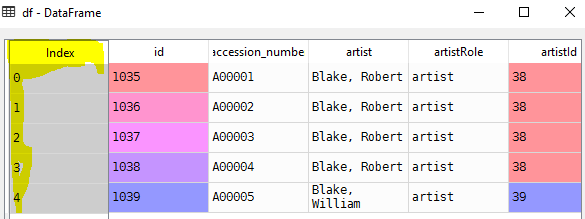
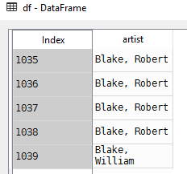
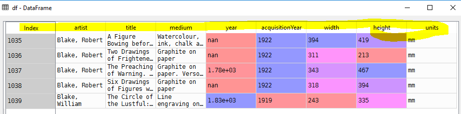

Data formats that pandas can read and load to DataFrame
import pandas as pd
# Read only five rows from csv file
df = pd.read_csv(r"d:\artwork_data.csv", nrows=5)Note: Default index coloum is provided by Pandas

Lets set id column as index
# Set index column as id
df = pd.read_csv(r"d:\artwork_data.csv", nrows=5,
index_col='id')
# Limit number of columns
df = pd.read_csv(r"\artwork_data.csv", nrows=5,
index_col='id', usecols=['id', 'artist'])
COLS_TO_USE = ['id', 'artist', 'title', 'medium', 'year', 'acquisitionYear', 'height', 'width', 'units']
df = pd.read_csv(r"D:\artwork_data.csv", nrows=5,
index_col='id', usecols=COLS_TO_USE)
Using pd.DataFrame.from_* can be used to convert dict and tuple objects to data frame
>>> import pandas as pd
>>> # student and marks in english
... marks = [("dora", 90), ("spiderman", 40)] # List of tuples
>>> df = pd.DataFrame.from_records(marks) >>> df
0 1
0 dora 90
1 spiderman 40Creating columns
>>> df.columns=['name','marks']
>>> df
name marks
0 dora 90
1 spiderman 40Write the data frame to pickle format. pickle is a native Python format for serialization. If you are not familiar with the term serialization, in our case, it just means writing and reading Python objects to and from a disk.
# Write data frame to pickle format
df.to_pickle(r"D:\artwork_data_frame.pickel")